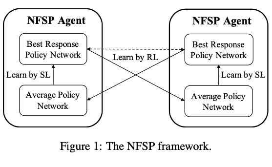

|
Wanqi Xue (薛万祺)
I am a PhD student studying Computer Science at Nanyang Technological University. I am fortunate to be advised by Prof. Bo An and Prof. Chai Kiat Yeo.
My research focuses on reinforcement learning, multi-agent reinforcement learning, and their applications in security, recommendation and so on. Previously, I also worked on meta-learning and few-shot learning.
I have experience in large open-source projects. I am a main contributor and an ASF committer of Apache-SINGA, for which I developed the AutoGrad system.
Email /
CV /
GitHub /
Google Scholar /
LinkedIn
|
|
|
|
Mis-spoke or mis-lead: Achieving robustness in multi-agent communicative reinforcement learning
Wanqi Xue,
Wei Qiu, Bo An, Zinovi Rabinovich, Svetlana Obraztsova, Chai Kiat Yeo
International Conference on Autonomous Agents and Multiagent
Systems (AAMAS), 2022
(Oral presentation)
We systematically explore the problem of adversarial communication in multi-agent RL. The adversarial communication problem is formulated as a two-player zero-sum game and we propose a game-theoretical method R-MACRL to improve the worst-case performance.
|
|
|
NSGZero: Efficiently learning non-exploitable policy in large-scale network
security games with neural monte carlo tree search
Wanqi Xue,
Bo An, Chai Kiat Yeo
AAAI Conference on Artificial Intelligence (AAAI), 2022
(Oral presentation)
We propose a model-based RL method, NSGZero, to learn a non-exploitable policy in NSGs. NSGZero improves data efficiency by performing planning with neural Monte Carlo Tree Search (MCTS). We enable neural MCTS with decentralized control, making NSGZero applicable to NSGs with many resources.
|
|
|
CFR-MIX: Solving imperfect information
extensive-form games with combinatorial action space
Shuxin Li, Youzhi Zhang, Xinrun Wang,
Wanqi Xue,
Bo An
International Joint Conference on Artificial Intelligence
(IJCAI), 2021
(Acceptance rate: 13.9%)
We propose a new algorithm, CFR-MIX, under the framework of neural Counterfactual Regret Minimization. CFR-MIX solves the exponential combinatorial action space problems in Team-Adversary Games.
|
|

|
Solving large-scale extensive-form
network security games via neural fictitious self-play
Wanqi Xue,
Youzhi Zhang, Shuxin Li, Xinrun Wang, Bo An, Chai Kiat Yeo
International Joint Conference on Artificial Intelligence
(IJCAI), 2021
(Acceptance rate: 13.9%)
We propose a novel learning paradigm, NSG-NFSP, to solve large-scale extensive-form NSGs based on Neural Fictitious Self-Play (NFSP).
|
|
|
One-shot image classification by learning to restore prototypes
Wanqi Xue,
Wei Wang
AAAI Conference on
Artificial Intelligence (AAAI), 2020
(Acceptance rate: 20.6%)
We propose a simple yet effective regression model, denoted by RestoreNet, which learns a class agnostic transformation on the image feature to move the image closer to the class center in the feature space.
|
|
|
Convolutional neural networks for food image recognition: An
experimental study
Yi Sen Ng, Wanqi Xue, Wei Wang, Panpan Qi
International Workshop on Multimedia Assisted Dietary Management (ACMMM Workshop), 2019
We conduct a series of experimental studies
to aid engineers in quickly preparing datasets, deploying and optimizing CNN based solutions for food image recognition tasks.
|
|
|
Apache-SINGA is an Apache Top Level Project, focusing on distributed training of deep learning and machine
learning models.
I founded the Autograd system for Apache-SINGA, which is a key module for deep learning
frameworks. The AutoGrad system is able to perform automatic differentiation of a tensor (loss).
Star
Fork
|
|